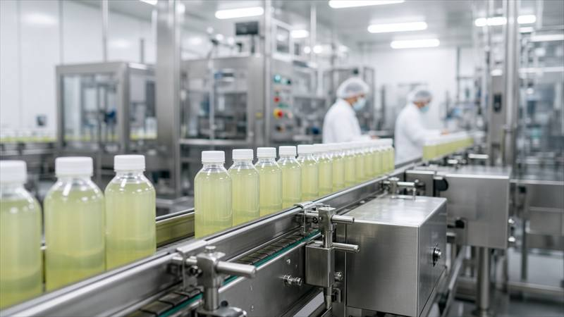
Alimentos e bebidas
Inspeções de recebimento, processo e produto final, com histórico na linha.
Qualidade Mestti
Inspeções e checklists no chão de fábrica.
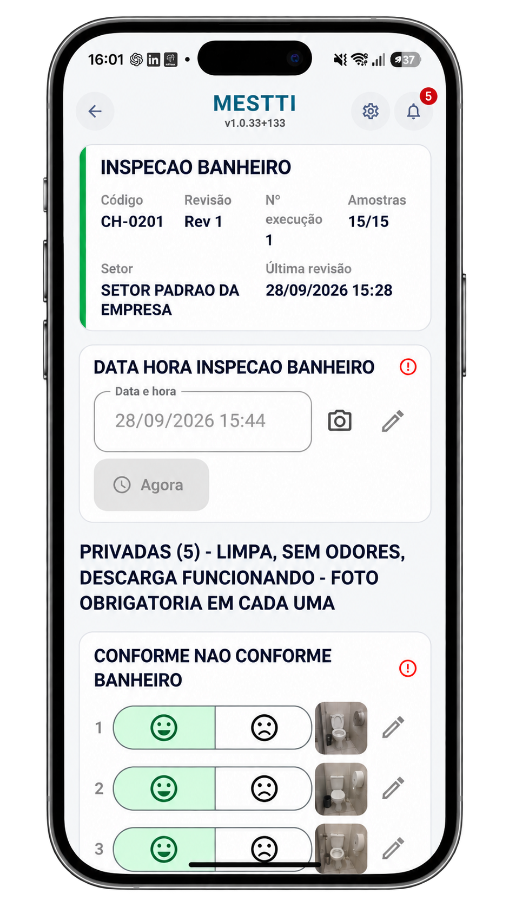
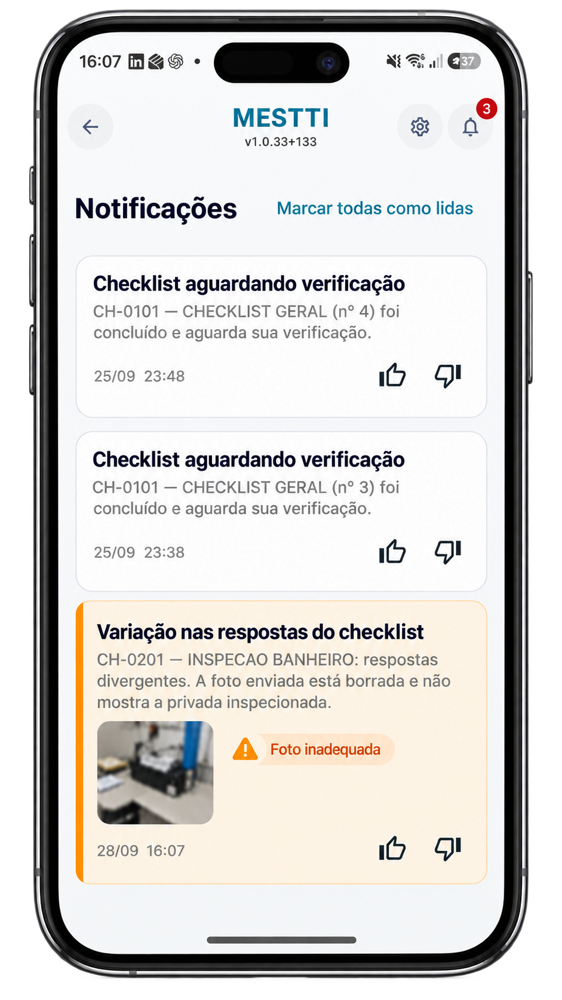
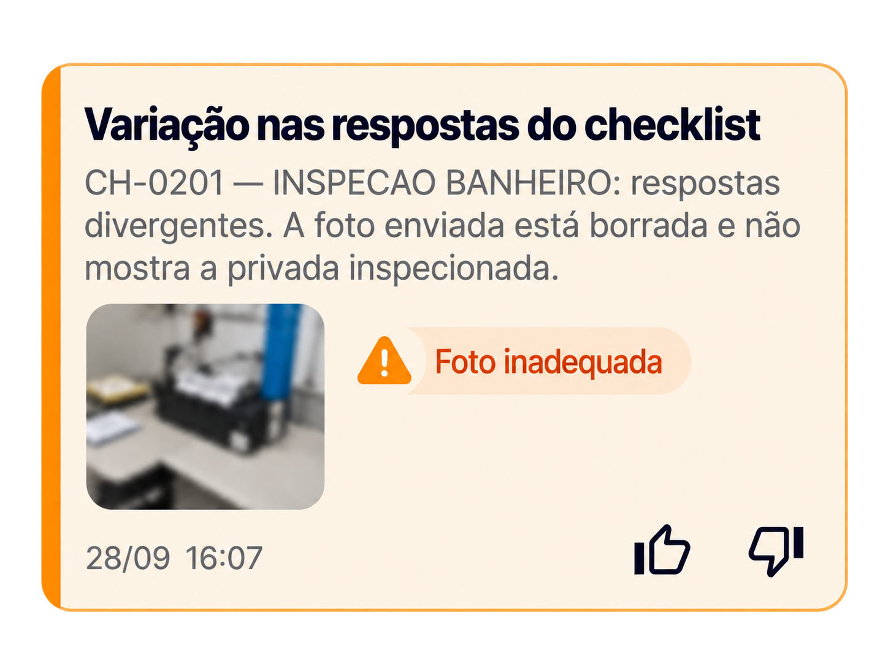
01 · Estruture
Tudo o que precisa ser conferido, em um só lugar.
O checklist evolui com o processo, sem perder o histórico de inspeções.
Do padrão da qualidade para a rotina da fábrica.
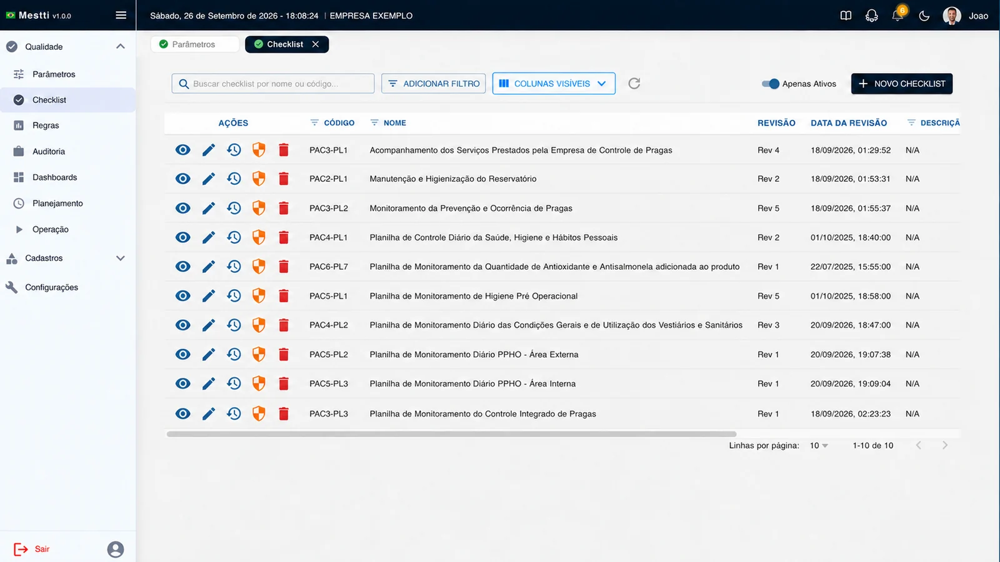
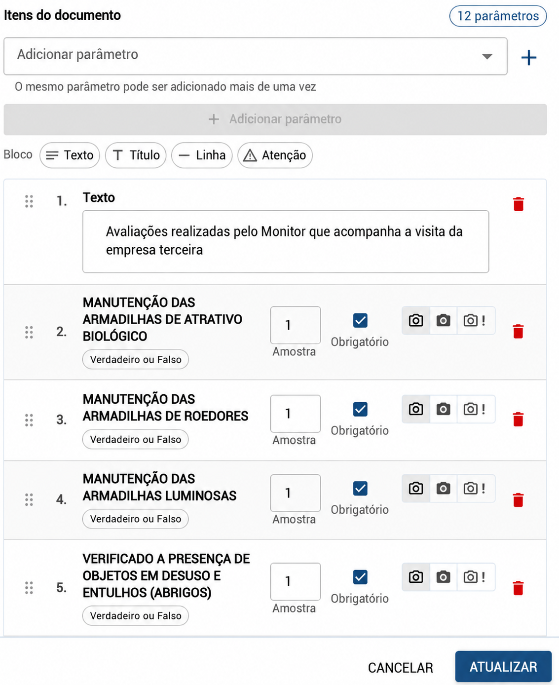
02 · Planejamento
Checklist, setor, máquina e horário ficam organizados em um só planejamento.
Cada regra define quando o checklist abre e permanece sob a gestão da equipe.
Planejamento e regra de inspeção no mesmo lugar.
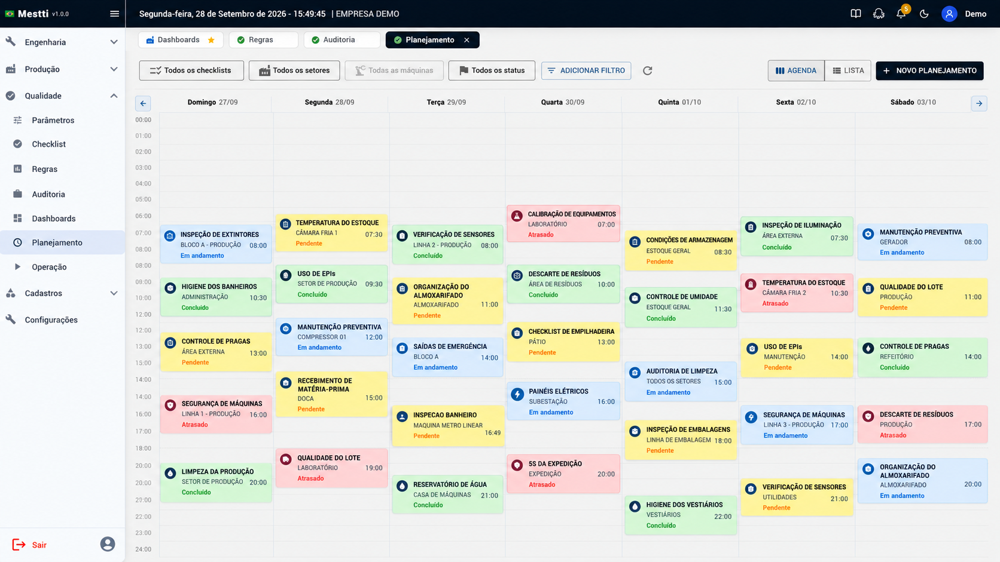
03 · Execute
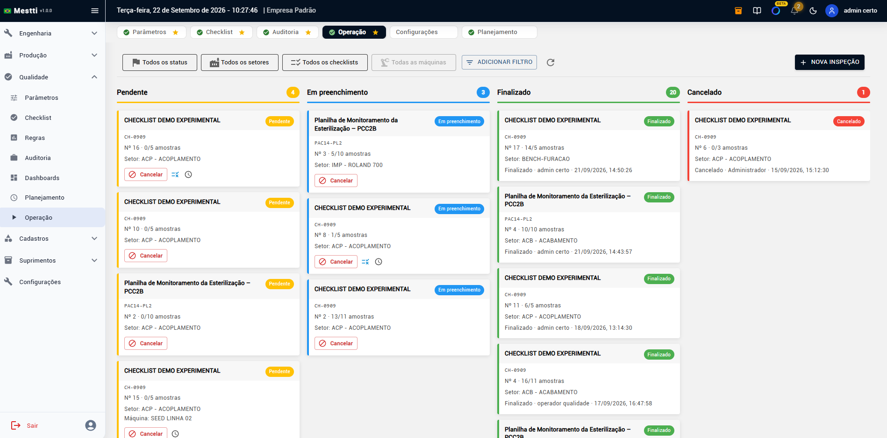
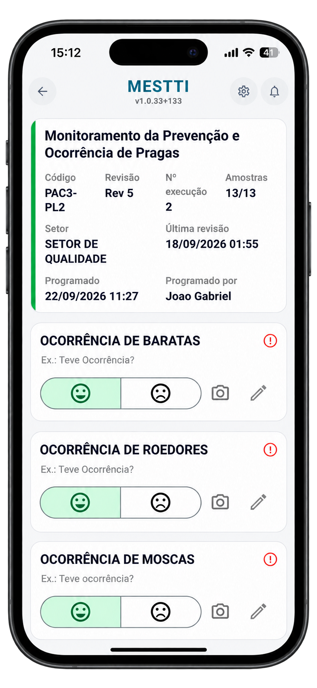
04 · Acompanhe
Veja o que está em andamento, o que já foi concluído e os registros que exigem atenção.
A gestão passa a ter uma visão centralizada das inspeções realizadas pela operação.
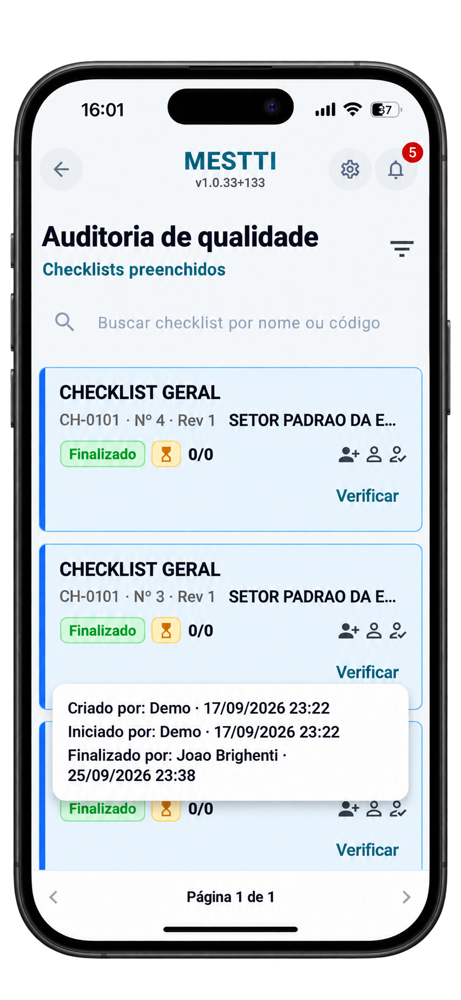
05 · Rastreie
Quem fez, quando, com qual checklist e revisão, onde, os valores registrados e o resultado.
Mais rastreabilidade para auditorias, investigação de problemas e melhoria contínua.
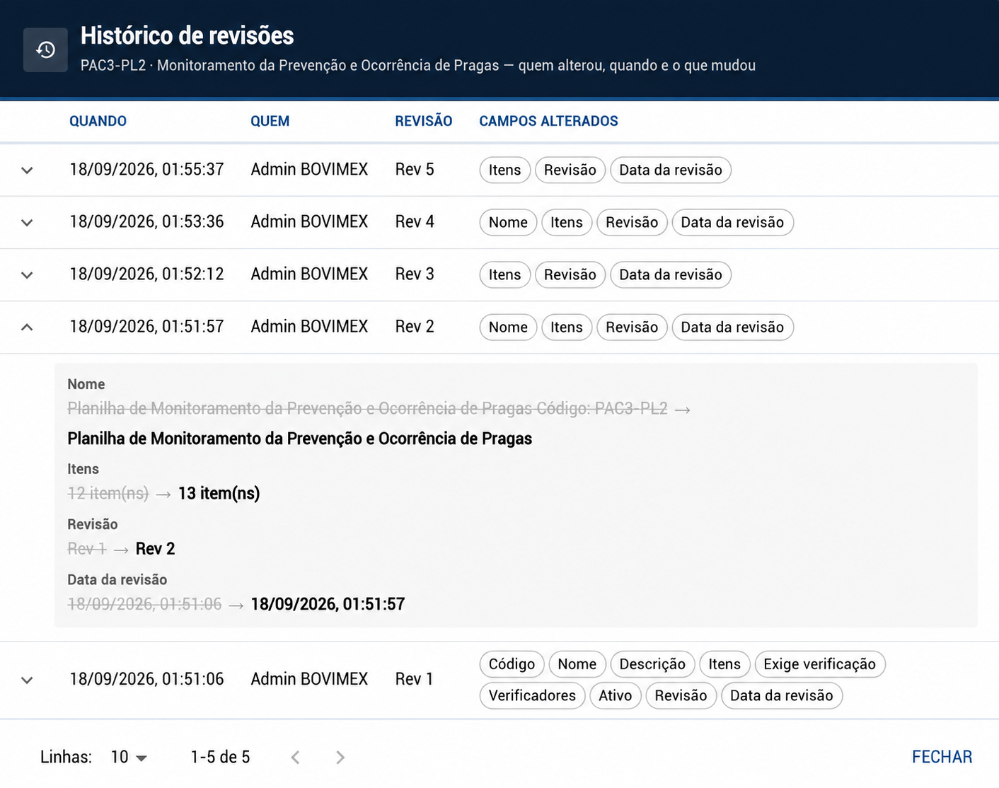
Onde usar?

Inspeções de recebimento, processo e produto final, com histórico na linha.
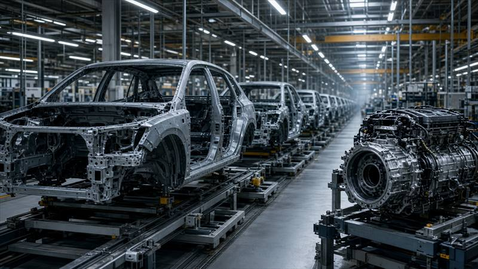
Checklists de liberação, processo e auditoria ligados à ordem de produção.
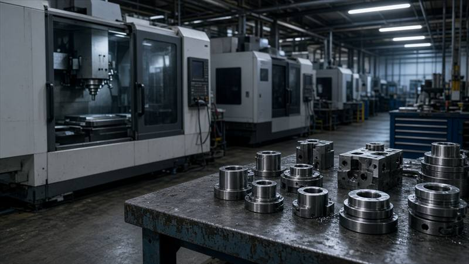
Verificações de processo, máquina e peça com registro no chão de fábrica.
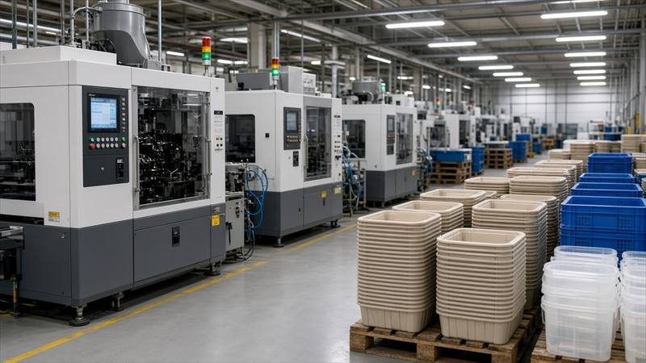
Controle de setup, processo e qualidade do lote sem planilha.
Rotinas de inspeção, limpeza e liberação com rastreabilidade.
Conferências de processo, liberação e boas práticas com histórico organizado.
Checklists de cozinha, recebimento e conferência do que é servido ou produzido.
Rotinas de inspeção e padrão de execução, com histórico de cada atendimento.
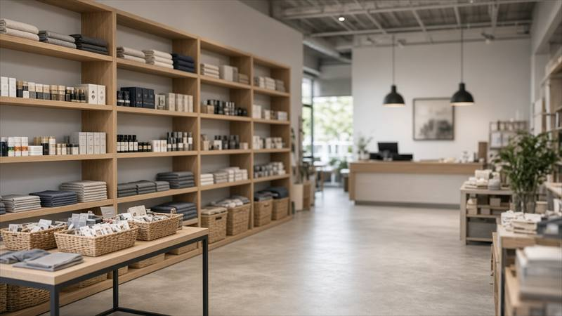
Conferência de recebimento, loja e produto antes de chegar ao cliente.
Inspeções, limpeza e boas práticas com registro de quem fez e quando.
Checklists de áreas, limpeza e organização com histórico da operação.
Verificações de recebimento, expedição e carga com histórico organizado.
Qualidade mais perto da operação
Demonstração gratuita • Sem compromisso • Começamos pelos processos que você já utiliza.
Consulte quem executou uma inspeção, quando ela ocorreu, qual checklist e revisão foram usados e quais valores e resultados foram registrados. O vínculo ao processo configurado ajuda a reunir evidências para auditorias e investigações.

Histórico de inspeção e rastreabilidade completa de lotes e materiais são requisitos diferentes. Se sua necessidade é relacionar um defeito a um lote, ordem ou máquina, peça que esse caminho seja demonstrado com o cenário da sua operação.
Checklists ajudam a organizar verificações; conformidade com uma norma depende dos procedimentos, evidências e requisitos aplicáveis à empresa. O uso do software não equivale a certificação.
Conheça os checklists digitais para rotinas de outras áreas e o apontamento da produção. Para comparar soluções, consulte o roteiro de avaliação técnica.